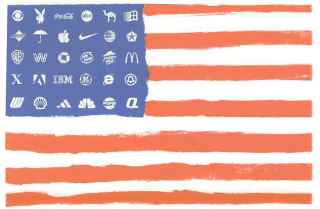

|

Corporate Socialism in America
Ralph lays it out one more time for those that didn't get the message over the last three decades.
- - - - - - - - - -
by Ralph Nader
 HE RELENTLESS EXPANSION of corporate control over our political economy has proven nearly immune to daily reporting by the mainstream media. Corporate crime, fraud and abuse have become like the weather; everyone is talking about the storm but no one seems able to do anything about it. This is largely because expected accountability mechanisms -- including boards of directors, outside accounting and law firms, bankers and brokers, state and federal regulatory agencies and legislatures -- are inert or complicit. HE RELENTLESS EXPANSION of corporate control over our political economy has proven nearly immune to daily reporting by the mainstream media. Corporate crime, fraud and abuse have become like the weather; everyone is talking about the storm but no one seems able to do anything about it. This is largely because expected accountability mechanisms -- including boards of directors, outside accounting and law firms, bankers and brokers, state and federal regulatory agencies and legislatures -- are inert or complicit.
When, year after year, the established corporate watchdogs receive their profits or compensation directly or indirectly from the companies they are supposed to be watching, independent judgment fails, corruption increases and conflicts of interest grow among major CEOs and their cliques. Over time, these institutions, unwilling to reform themselves, strive to transfer the costs of their misdeeds and recklessness onto the larger citizenry. In so doing, big business is in the process of destroying the very capitalism that has provided it with a formidable ideological cover.
Consider the following assumptions of a capitalistic system:
1) Owners are supposed to control what they own. For a century, big business has split ownership (shareholders) from control, which is in the hands of the officers of the corporation and its rubber-stamp board of directors. Investors have been disenfranchised and told to sell their shares if they don't like the way management is running their business. Nowadays, with crooked accounting, inflated profits and self-dealing, it has proven difficult for even large investors to know the truth about their officious managers.
|
We have a government of big business, by big business and for big business, even if more of these businesses are nominally moving their state charters to Bermuda-like tax escapes.
|
2) Under capitalism, businesses are supposed to sink or swim, which is still very true for small business. But larger industries and companies often have become "too big to fail" and demand that Uncle Sam serve as their all-purpose protector, providing a variety of public guarantees and emergency bailouts. Yes, some wildly looted companies that are expendable, such as Enron, cannot avail themselves of governmental salvation and do go bankrupt or are bought. By and large, however, in industry after industry where two or three companies dominate or presage a domino effect, Washington becomes their backstop.
3) Capitalism is supposed to exhibit a consensual freedom of contract -- a distinct advance over a feudal society. Yet the great majority of contracts for credit, insurance, software, housing, health, employment, products, repairs and other services are standard-form, printed contracts, presented on a take-it-or-leave-it basis. Going across the proverbial street to a competitor gets you the same contract. Every decade, these "contracts of adhesion," as the lawyers call them, become more intrusive and more insistent on taking away the buyers' constitutional rights to access to courts in favor of binding arbitration or stipulate outright surrender of basic rights and remedies. The courts are of little help in invalidating these impositions by what are essentially private corporate legislatures regulating millions of Americans.
4) Capitalism requires a framework of law and order: The rules of the economic game are to be conceived and enforced on the merits against mayhem, fraud, deception and predatory practices. Easily the most powerful influence over most government departments and agencies are the industries that receive the privileges and immunities, regulatory passes, exemptions, deductions and varied escapes from responsibility that regularly fill the business pages. Only those caught in positions of extreme dereliction ever have reason to expect more than a slap on the wrist for violating legal mandates.
5) Capitalist enterprises are expected to compete on an even playing field. Corporate lobbyists, starting with their abundant cash for political campaigns, have developed a "corporate state" where government lavishes subsidies, inflated contracts, guarantees and research and development and natural resources giveaways on big business -- while denying comparable benefits to individuals and family businesses. We have a government of big business, by big business and for big business, even if more of these businesses are nominally moving their state charters to Bermuda-like tax escapes.
"Corporate socialism" -- the privatization of profit and the socialization of risks and misconduct -- is displacing capitalist canons. This condition prevents an adaptable capitalism, served by equal justice under law, from delivering higher standards of living and enlarging its absorptive capacity for broader community and environmental values. Civic and political movements must call for a decent separation of corporation and state.
In 1938, in the midst of the Great Depression, Congress created the Temporary National Economic Committee to hold hearings around the country, recommend ways to deal with the concentration of economic power and promote a more just economy. World War II stopped this corporate reform momentum. We should not have to wait for a further deterioration from today's gross inequalities of wealth and income to launch a similar commission on the rampant corporatization of our country. At stake is whether civic values of our democratic society will prevail over invasive commercial values.

|